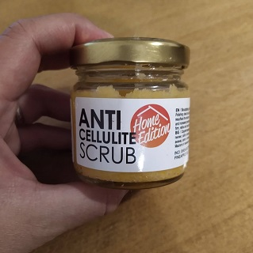

Козметика
-
Успокояваща почистваща пяна за лице Алое
От The Body Shop. Изразходвана около 1/4.
Ежедневна измиваща пяна за лице.
Подходяща за чувствителна кожа. -
Балансираща маска за лице Водорасли
От The Body Shop. Изразходвана около 1/3.
Глинена маска за контрол на омазняването.
-
Околоочен крем
От Naturel. Използван 1-2 пъти.
Регенериращ околоочен крем с натурални съставки.
-
Антицелулитен скръб за тяло
С аромат на ананас. Използван 1 път.



Неща за оцветяване
-
Тънкописци
36 броя. Staedler.

-
Флумастери
26 броя. Staedler.

-
Книга за оцветяване "Мандала"
Няколко страници са оцветени.


Разни
-
Джобни тефтери
Удобни за записки в движение.
Заедно или поотделно.
-
Тефтери и тетрадки
Различни варианти тефтери и тетрадки среден размер.
Заедно или поотделно.
-
Шаблонен дневник
Идеален старт във воденето на дневник.
Липсва първата страница.

-
Текстилна подвързия за книги
Пасва на различни размери книги.